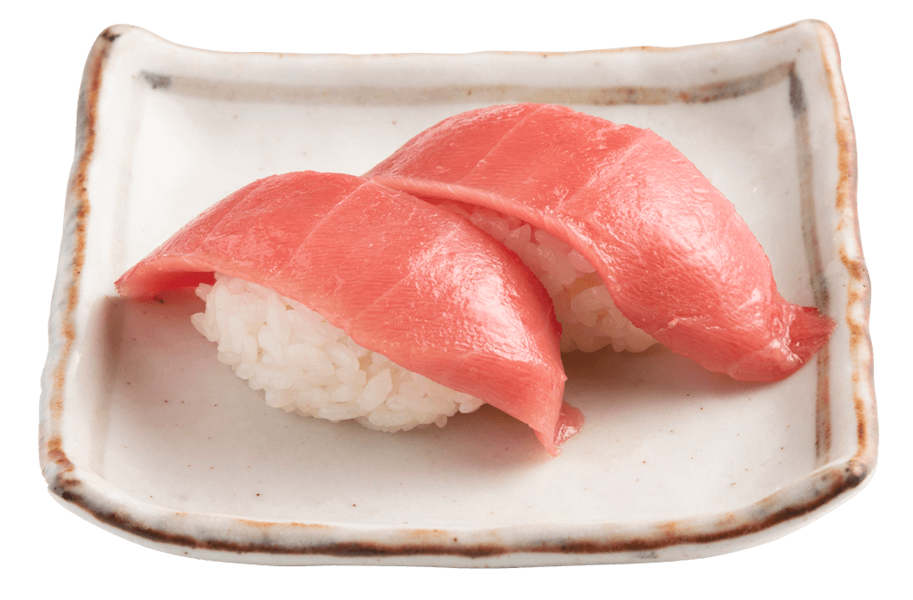
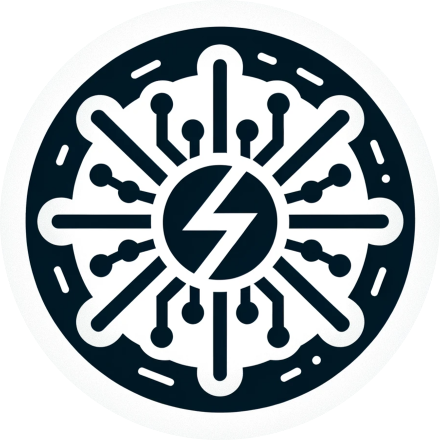

2024
Assessing the impact of autoclaving versus purchasing new Plastic Flasks in a technological platform
A course project on LCA of plastic Flasks, delivery of course ENV-510 Life Cycle Assessment in Energy Systems.

Li-Ion Cell Equivalent Circuit Model Parameters Estimation from Time-Domain Measurements
A semester project on ECM parameters estimation of lithium ion batteries from time domain at DESL EPFL.

Sushi: City Girl Becomes a Global Pop Star
A course project on sushi's globalization, delivery of course HUM-462 History of globalization II.

2023
COVID-19 Pandemic & Green Energy Transition
A data story about COVID-19 pandemic & green energy transition in Europe countries, delivery of course CS-401 Applied Data Analysis.

My bachelor project at XJTU under the supervision of [Prof. Li Jin](https://scholar.google.com/citations?user=Kfzb_HYAAAAJ&hl=en).